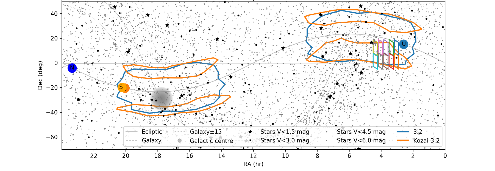

Jiali (Charlie) Liang
Pronunciation : Ge-Ah Lee Le-on
BIOGRAPHY

I was an undergraduate student from University of Maryland  (Go Terps!). I double majored in Astronomy and Physics and graduated in December 2020 with High Honor in Astronomy. My senior undergraduate thesis, advised by Prof. Douglas Hamilton, was titled “Toward developing a new algorithm for fast integrations of particles in complex gravity fields”.
(Go Terps!). I double majored in Astronomy and Physics and graduated in December 2020 with High Honor in Astronomy. My senior undergraduate thesis, advised by Prof. Douglas Hamilton, was titled “Toward developing a new algorithm for fast integrations of particles in complex gravity fields”.
My ultimate research goal is to utilize the combination of Artificial Intelligence, Robotics, Computer Vision, and Machine Learning to enhance human life quality. I am currently advised by Professor Zhaoyang Wang in the field of Computer Vision and Machine Learning. I am looking for opportunities to pursue computer science in a graduate degree.
Research Highlights
Lab Assistant
 Washington D.C., USA
Washington D.C., USA

I worked with professor Zhaoyang Wang in his computer vision lab. We aim at using computer vision and machine learning to achieve fast and accurate gathering of depth information. A paper regarding this experiment and technique was accepted by Journal of Physics: Photonics.
Senior Thesis Research - Honor
College Park, Maryland, USA

I worked with professor Douglas Hamilton in the Astronomy department of University of Maryland. We worked on NASA DART project, in which we mainly focus on the goal of using simulation to improve people’s understanding of asteroid, especially in its gravity field. We use “100 x 100 x 100” cubes to convert a phase data (surface connected by triangles) (Left) to a 3D shape consists of cubes (Right).
ASIAA Summer Student Program
Taipei, Taiwan

I participated in the 2019 Summer Student Program in ASIAA. My primary role is to utilize simulations to support a telescope proposal. In the simulation, we tried to maximize the telescope discovery results in certain areas (KOZAI regions) because of the actual limited telescope observing time. The summer student program at ASIAA was very interesting because it consisted students from all over the world: Taiwan, Mainland China, Hong Kong, Macau, Malaysia, India, Spain, USA, and Japan.
Work Experience Highlights
Software Development and Analysis Intern
Dunkirk, Maryland, USA

I am an intern at the Aerospace Engineering and Research Associate (AERA). I develop a tracking tool in Python to monitor the impact of COVID-19 on US flight performance. We publish our analytical data for both Metropolitan Air-Hubs and different commercial airlines on Greenlandings.org.
SAT Math Teacher
Shanghai, China

I was an SAT Math Teacher at New Oriental in Shanghai. I oversaw over 100 students and offered them mock tests, leading to an average of 10% increase in their test scores. Some of my students went to prominent universities such as Emory University, Ohio State University, University of Connecticut, University of Toronto and etc.
Publications
Nguyen, H. Liang, J. Wang, Y. and Wang, Z. “Accuracy Assessment of Fringe Projection Profilometry and Digital Image Correlation Techniques for Three-dimensional Shape Measurements,” accepted by Journal of Physics: Photonics. 2020
Teaching Experience
| Year | Semester | Position | Course |
|---|---|---|---|
| 2019 | Spring | Astronomy Tutor | ASTR121 : Introductory Astrophysics II - Stars and Beyond |
| 2018 | Fall | Astronomy Tutor | ASTR120 : Introductory Astrophysics - Solar System |
| 2017 | Fall | Physics TA | PHYS171 : Introductory Physics: Mechanics and Relativity |
Project Highlights
 |
 |
|---|---|
| GRE Vocab App | Chinese Bible Verse Search |
Visitors